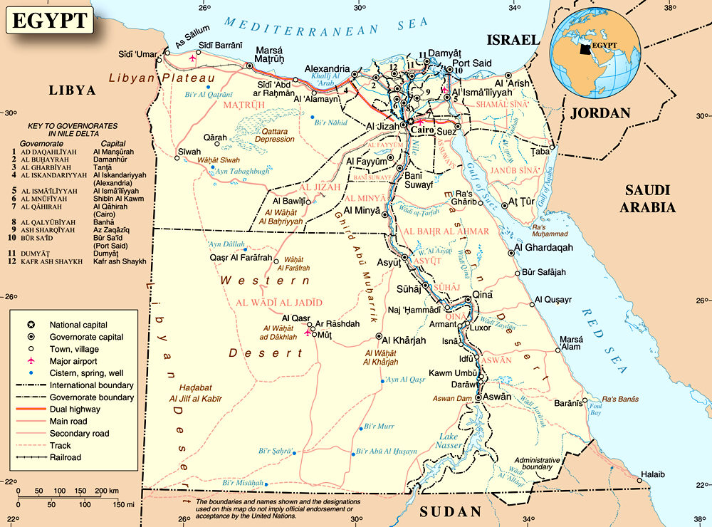
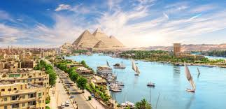

Os hieróglifos
Um sistema de escrita cheio de símbolos.
Os hieróglifos podiam representar sons, palavras ou ideias e eram usados em templos, monumentos e outros registros.
UMA CIVILIZAÇÃO ETERNA
Descubra os mistérios, os monumentos e os costumes de uma das civilizações mais fascinantes da humanidade.
Iniciar exploraçãoHISTÓRIA · MISTÉRIO · ETERNIDADE
01 — O TERRITÓRIO
Entre as areias do deserto e as águas do Nilo.

O Egito é um país localizado no nordeste da África e possui uma das civilizações mais antigas da humanidade.
Grande parte da população vive próxima ao rio Nilo, que foi essencial para o desenvolvimento da agricultura.
O Egito atual tem como capital a cidade do Cairo e é um importante centro cultural e turístico.
02 — MONUMENTOS ETERNOS
Construções monumentais que atravessaram milênios.

As pirâmides são os monumentos mais conhecidos do Egito e atraem milhões de visitantes todos os anos.
A Grande Pirâmide de Quéops é considerada uma das Sete Maravilhas do Mundo Antigo.
Essas construções serviam como túmulos para os faraós e demonstravam o poder dos governantes.
03 — CRENÇAS E COSTUMES
Conheça as crenças, os registros e os monumentos egípcios.

Os antigos egípcios utilizavam a escrita hieroglífica para registrar acontecimentos importantes.
A religião era baseada em diversos deuses, como Rá, Anúbis e Osíris.
A mumificação era realizada porque os egípcios acreditavam na vida após a morte.
Atualmente, o Egito continua sendo um dos países mais fascinantes do mundo devido à sua história e aos seus monumentos.
04 — SEGREDOS DO PASSADO
Selecione um cartão para revelar uma curiosidade.
Um sistema de escrita cheio de símbolos.
Os hieróglifos podiam representar sons, palavras ou ideias e eram usados em templos, monumentos e outros registros.
Uma fonte de vida no meio da região árida.
As cheias do Nilo depositavam sedimentos férteis nas margens, favorecendo a agricultura e o desenvolvimento das cidades.
Uma religião com muitas divindades.
Rá era associado ao Sol, Anúbis aos ritos funerários e Osíris à vida após a morte e à renovação.
Um material importante para os registros.
Os egípcios produziam folhas de escrita a partir da planta papiro, que crescia em áreas úmidas.
05 — DESAFIO DO FARAÓ
Responda às perguntas e descubra quanto aprendeu.
CONTINUE SUA DESCOBERTA